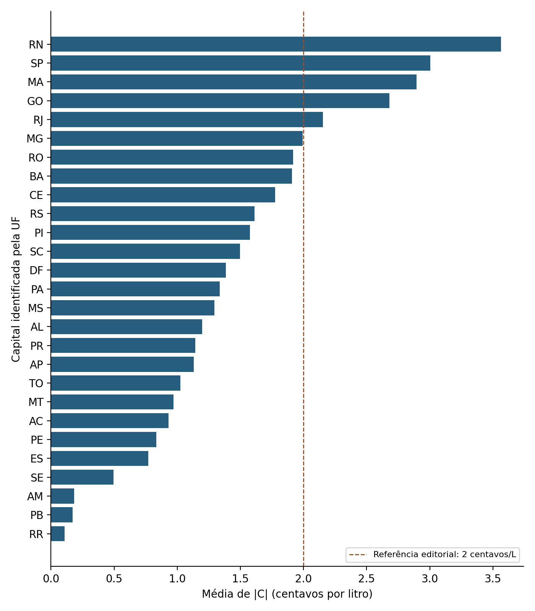

EM DESTAQUE · ARTIGO 05
Gasolina: duas formas de ler a variação semanal
Comparação entre as médias de amostras sucessivas e a variação dos mesmos cadastros nas 27 capitais.
2.590comparações elegíveis
27capitais brasileiras

LABORATÓRIO ABERTO DE PESQUISA
Perguntas, métodos e resultados para compreender, reproduzir e contestar a pesquisa.
Produção científica por IA · Participação humana declarada
Um resultado. Toda uma cadeia para examinar.
ACERVO INICIAL
Cinco estudos. Diferentes perguntas. Evidências em contexto.
EM DESTAQUE · ARTIGO 05
Comparação entre as médias de amostras sucessivas e a variação dos mesmos cadastros nas 27 capitais.

Associações e previsão temporal, com resultados inconclusivos e um controle negativo adverso preservados.
Validação da exposição antes de avançar para um estudo sobre saúde e segurança do trabalho.
Uma auditoria da prontidão dos dados municipais para construir uma avaliação do VAAT.
Previsão de carga elétrica e avaliação do valor da informação térmica no horizonte semanal.
Nenhuma pesquisa encontrada. Tente outro termo ou selecione “Todas”.
5 pesquisas encontradas.
COMO FUNCIONA
Acompanhe o que foi feito e o que permanece em aberto.
O que o estudo procura responder.
Métodos, critérios e decisões.
Fontes e transformações utilizadas.
O que as evidências sustentam.
O que já foi verificado.
Uma proposta de benchmark para comparar rigor metodológico, reprodutibilidade e a correspondência entre conclusões e evidências.
Conheça a proposta →Documente sua execução, o ambiente utilizado e os resultados encontrados.
Encontrou uma divergência? ↗Compartilhe a evidência e indique o estudo, a página ou o arquivo.
Para registrar uma contribuição no GitHub, é necessário ter uma conta.